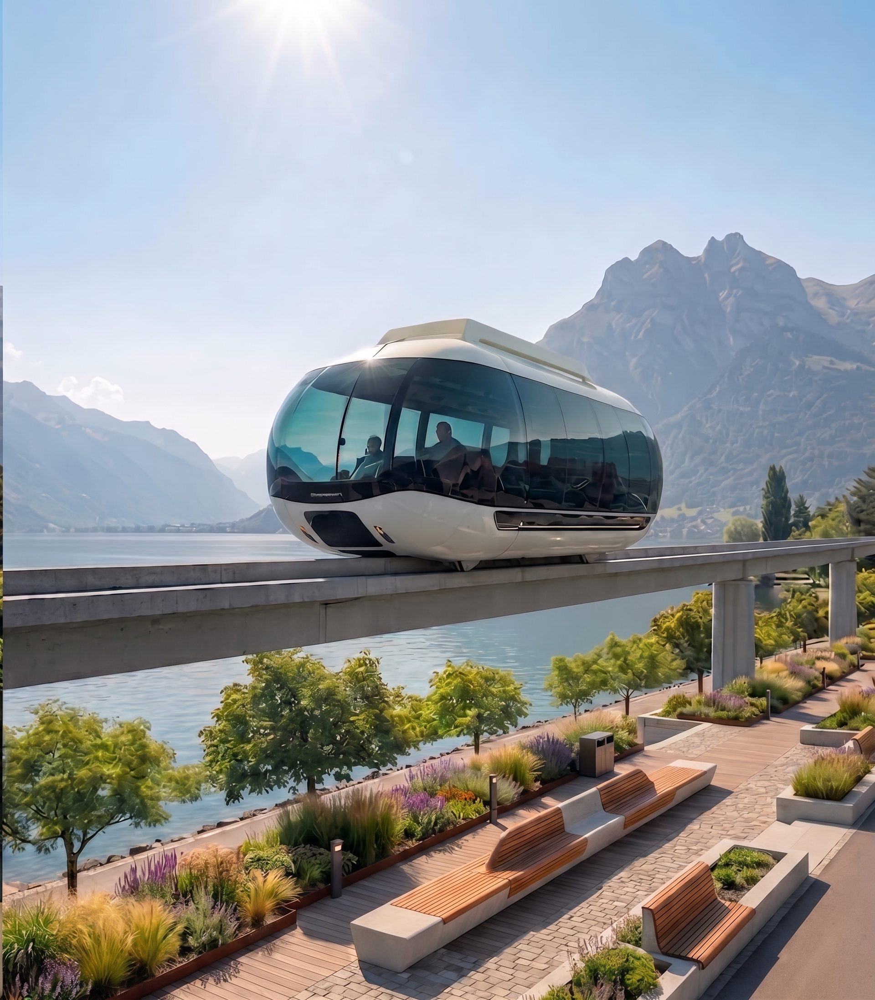

La précision suisse, portée par l'aimant
LémanLoop n'est ni un train, ni un téléphérique. C'est un tiers mode de transport : une sustentation magnétique suspendue sous un monorail fin, pensée pour épouser les rives du lac.
Le flux continu à haute vitesse
Sur la ligne principale, les wagonnets ne s'arrêtent jamais : ils filent en boucle fermée à 200–250 km/h, sans friction ni arrêt imposé. Le flux ne ralentit jamais — ni pour embarquer, ni pour stationner.
Zéro émission, zéro emprise au sol
Le rail est posé sur une poutre fine qui surplombera rives et vignes, sans couper les habitats ni consommer de terres agricoles. Motorisation 100 % électrique, alimentée en énergie renouvelable.
Le système « hors-ligne » des stations
Chaque station possède une voie de dérivation : le wagonnet quitte la ligne principale pour s'immobiliser en douceur à quai pendant que le flux file à pleine vitesse au-dessus. Réinsertion autonome et synchronisée par IA sur la ligne — zéro arrêt intermédiaire obligatoire.
Des wagonnets intimistes et panoramiques
Dix à vingt voyageurs seulement, assis face au lac. Vitres en verre courbe du sol au plafond : plus un moyen de transport, un belvédère mobile sur les Alpes.
Une boucle, huit rives, un seul tour du lac
Le LémanLoop enlace le lac en continu, des deux côtés de la frontière. Ci-dessous, la géographie du tracé — carte de principe, tracé définitif à l'étude.
Tour complet du lac en 1h10 — à la deuxième
Grâce au système hors-ligne (aucun arrêt intermédiaire obligatoire sur la ligne principale) et à la vitesse de croisière du maglev, voici les temps estimés entre chaque station.
Un salon roulant face aux Alpes
Chaque wagonnet est une pièce de verre suspendue : dix à vingt voyageurs, aucune cloison, un horizon sans fin. On monte, on s'assoit face au lac, et la rive défile en silence.
voyageurs par wagonnet : l'échelle du tramway intimiste, jamais celle du train de banlieue.
départs toutes les deux minutes aux heures de pointe. On n'attend pas le LémanLoop : il est déjà là.
aucun moteur à bord, aucun frottement : la seule chose qu'on entend, c'est le lac.
